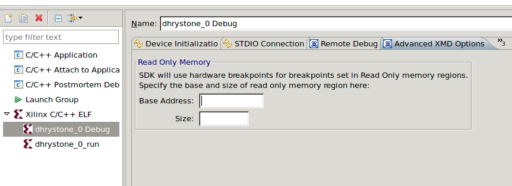
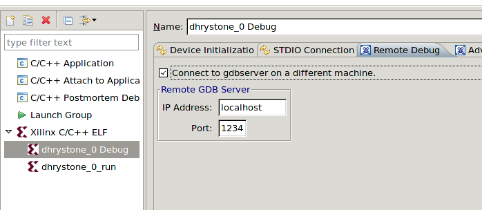

Specifying XMD target configuration
To configure the XMD Target options, do the following:
- In the C/C++ Projects view, select a project.
- Select Run > Run Configurations or Run >
Debug Configurations.
- In the Configurations box, expand Xilinx C/C++ ELF.
- Select a run or debug configuration.
- Click the Advanced XMD Options tab.

- To specify the Read-Only Memory address range, type the start address in the Base Address box and size of the memory (in bytes) in the Size box.
- To specify the Memory Mapping for PowerPC processor resources for a PowerPC processor target, specify the start addresses in the I-Cache Addr, D-Cache Addr, I-Tag Addr, D-Tag Addr, DCR addr, and TLB Addr boxes. The ISOCM addresses for the PowerPC 405 processor is automatically inferred for the system.
- Click the Remote Debug tab. (This
applies to debugging only.)

- Select Connect to gdbserver on a different machine to connect to a GDB server running remotely.
- Specify the remote host IP address and port number of the GDB server.
- Click Apply to save these settings.

Debugging applications
Run overview
Profile overview

Creating or editing a run/debug/profile configuration
Debugging a program
Running a program
Profiling a program
Configuring the JTAG settings
Copyright © 1995-2012 Xilinx, Inc. All rights reserved.